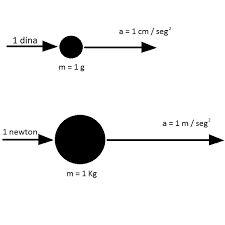

Una dina se define como la fuerza que, aplicada a la masa de un gramo, le comunica una aceleración de 1 centímetro en un segundo al cuadrado.
Formula ----1 dyn = 1 g·cm/s2
Con la aprobación del Sistema Internacional de Unidades, conocido por las siglas SI, adoptado en 1960 por la Conferencia General de Pesas y Medidas se tomó como unidad de medida el newton (N), pues la dina, como unidad de fuerza, tiene el inconveniente de ser demasiado pequeña para fines prácticos.